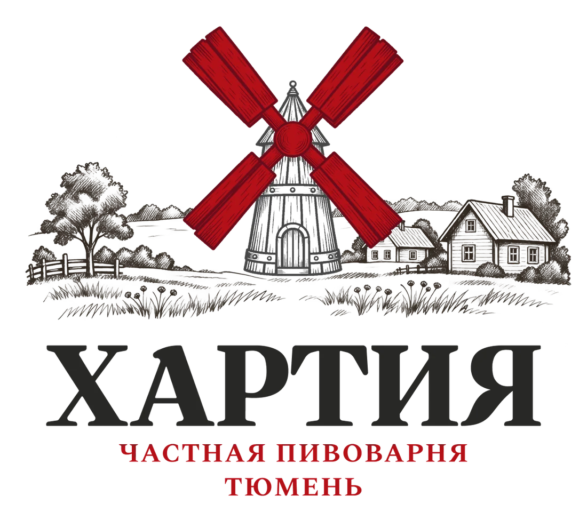
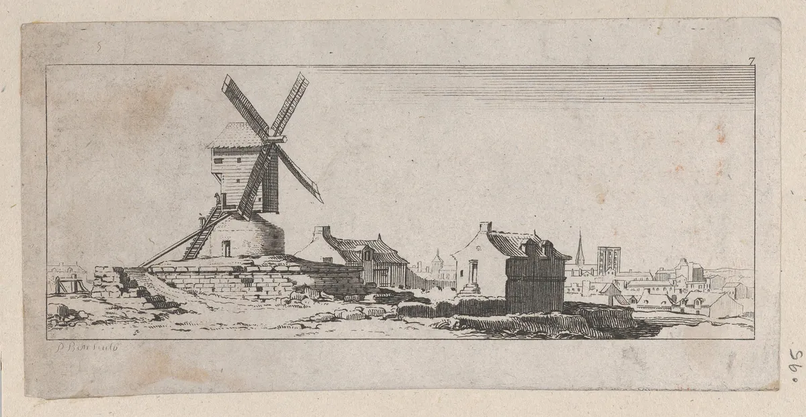
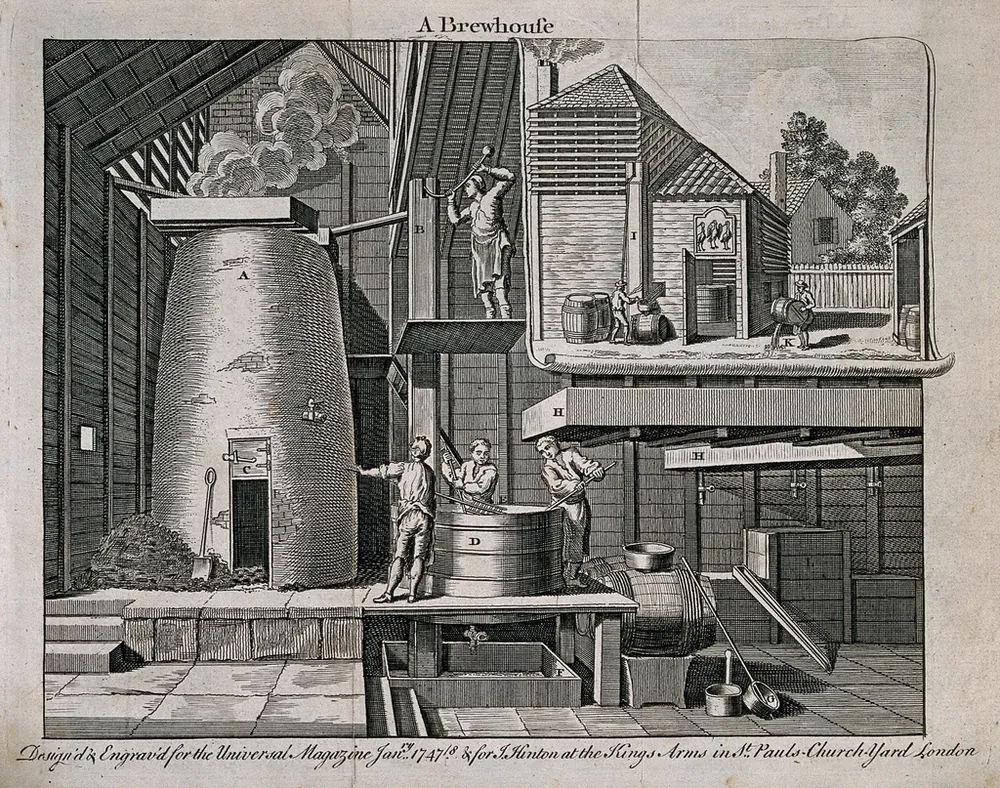
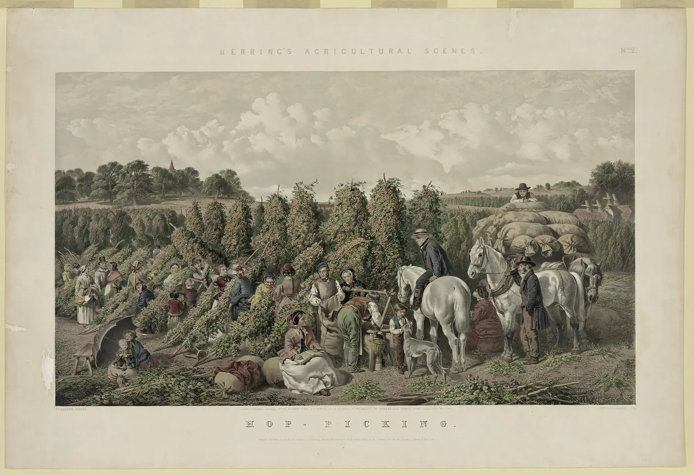
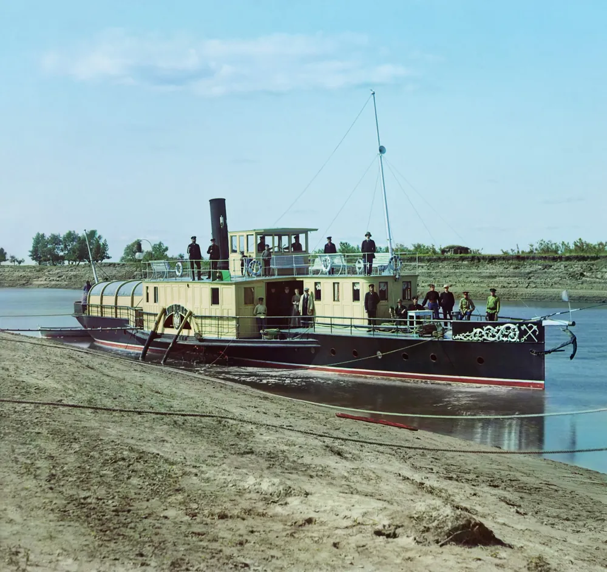

Вода, солод, хмель и дрожжи. Больше ничего.
Частная пивоварня в Тюмени. Варим нефильтрованное пиво вручную, без вкусовых добавок.

Хартия пивоварни
Название обязывает. Вот четыре правила, по которым мы варим.

Состав
В пиво идут вода, солод, хмель и дрожжи. Вкусовых добавок в нём нет.
Ручная работа
Основные операции на варке выполняет пивовар. Автоматики у нас минимум.
Живое пиво
Мы не фильтруем пиво, поэтому оно может быть слегка мутным. Так задумано.
Свежесть
Варим небольшими партиями и стараемся, чтобы пиво быстро доходило до вас.
От зерна до кружки
Мельница на нашем знаке напоминает о зерне. Из зерна в деревнях делали и хлеб, и пиво. Состав простой, а ждать приходится долго.
Мы не торопим процесс и показываем его без прикрас.
Пивоварня основана в 2015 году. Мы хотим, чтобы тюменцы пили по-настоящему свежее пиво: между ёмкостью на пивоварне и вашей кружкой проходит как можно меньше времени.


Как варится наше пиво
Солод и вода
Берём солод, измельчаем и смешиваем с горячей водой.
Варка
Полученное сусло варим с хмелем.
Брожение
Охлаждаем сусло, добавляем дрожжи и даём пиву побродить и отстояться.
Розлив
Готовое пиво разливаем.
Сорта
Четыре сорта живого нефильтрованного пива.
Где найти свежее
Утром в пивоварне, вечером в стакане.
Мы показываем только те точки, где пиво всегда свежее. Список ведёт сама пивоварня: точки добавляются и убираются.
Бот в Telegram и MAX
Пока бот рассказывает о пивоварне, показывает сорта и принимает заявки. Нажимайте кнопки в окне бота, чтобы увидеть, как это работает.
Позже в нём появятся:
- предзаказ на самовывоз;
- клуб друзей пивоварни с новостями.
Сообщить об открытии
Для баров и магазинов
Хотите, чтобы Хартия была у вас в меню или на полке? Оставьте заявку, мы работаем с барами, ресторанами и магазинами. Расскажем о сортах и условиях поставки.
